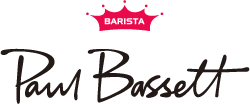

홈 > 브랜드 매거진 > 프릳츠
프릳츠 Fritz Coffee Company
프릳츠는 서울을 대표하는 스페셜티 커피·베이커리 브랜드다. 물개 캐릭터와 복고풍 디자인을 앞세운 강렬한 시각 정체성으로 미니멀리즘이 주류이던 스페셜티 업계에서 차별화에 성공했다. 직접 로스팅한 원두와 빵을 함께 내놓는 매장 운영, 전국 카페를 향한 원두 도매를 병행하며 한국 커피 문화의 아이콘으로 자리 잡았다.
산업 분야 식음료 · 공개 등급 자료 기반 · 브랜드 평가 4.1 ★
한눈에 보는 브랜드
프릳츠는 서울을 대표하는 스페셜티 커피·베이커리 브랜드다. 물개 캐릭터와 복고풍 디자인을 앞세운 강렬한 시각 정체성으로 미니멀리즘이 주류이던 스페셜티 업계에서 차별화에 성공했다.
직접 로스팅한 원두와 빵을 함께 내놓는 매장 운영, 전국 카페를 향한 원두 도매를 병행하며 한국 커피 문화의 아이콘으로 자리 잡았다.
브랜드 관점
프릳츠의 핵심은 친근한 물개 캐릭터와 복고풍 브랜딩이다. 절제된 스페셜티 미감과 달리 포스터, 콜드브루 병, 굿즈 전반에 익살스러운 물개를 새겨 대중적 친밀감을 확보했다.
산지를 직접 찾아 계약하는 생두 바이어 체계와 식품안전인증 로스팅 공장을 갖춰 월 단위 대량 로스팅과 전국 카페 원두 도매를 병행한다. 직접 로스팅·블렌딩 역량과 베이커리를 결합한 점이 차별화 지점이다.
시작과 성장
프릳츠는 2014년 서울 마포구 도화동에 1호점을 열며 출발했다. 바리스타 챔피언 박근하, 제빵사 허민수, 로스터 김도현, 생두 바이어 김병기와 전경미, 바리스타 송성만 등 분야별 전문가 6명이 함께 세운 공동창업 구조가 특징이다.
오래된 한옥과 양옥을 개조한 공간에 빈티지한 무드를 입혀 빵과 커피를 한자리에서 선보였고, 전문성과 복고 감성을 결합한 출발점이 이후 브랜드 정체성의 토대가 됐다.
브랜드 아이덴티티
프릳츠의 상징은 둥글고 친근한 물개 로고다. 복고풍 서체와 빈티지한 공간 무드를 결합해 절제된 스페셜티 미감과 구별되는 익살스러운 정체성을 구축했고, 물개 마크 하나로 브랜드를 떠올리게 하는 인지도를 확보했다.
제품과 서비스
프릳츠는 직접 로스팅한 원두를 중심으로 커피와 빵을 함께 선보인다. 서울시네마, 잘 되어 가시나, 올드독 등 대표 블렌드와 싱글 오리진 원두, 드립백, 콜드브루를 갖추고, 매장에서는 커피와 프랑스식·한국식 베이커리를 함께 판매한다.
현재 상태
프릳츠는 매장 운영과 더불어 전국 수백 곳 카페에 원두를 납품하는 도매 사업을 확대하며 한국 스페셜티 커피의 대표 브랜드로 입지를 굳히고 있다. 온라인 커피 구독과 굿즈까지 사업 영역을 넓혔다.
BI/CI 변천사
자주 묻는 질문
프릳츠의 브랜드 아이덴티티는 무엇인가요?
프릳츠의 상징은 둥글고 친근한 물개 로고다.
프릳츠의 대표 제품은 무엇인가요?
프릳츠는 직접 로스팅한 원두를 중심으로 커피와 빵을 함께 선보인다.
프릳츠는 현재 어떤 상태인가요?
프릳츠는 매장 운영과 더불어 전국 수백 곳 카페에 원두를 납품하는 도매 사업을 확대하며 한국 스페셜티 커피의 대표 브랜드로 입지를 굳히고 있다.
프릳츠의 공식 웹사이트는 어디인가요?
프릳츠의 공식 웹사이트는 https://fritz.co.kr 입니다.
함께 읽을 브랜드

식음료 · 자료 기반폴 바셋폴바셋(Paul Bassett)은 2009년 매일유업이 국내에 선보인 스페셜티 커피 전문점이다. 2003년 월드바리스타챔피언십 우승자인 호주 바리스타 폴 바셋의 이름...
 식음료 · 자료 기반노티드
식음료 · 자료 기반노티드노티드는 운영사 지에프에프지가 전개하는 프리미엄 도넛·디저트 브랜드다. 우유생크림도넛으로 대표되는 구멍 없는 생크림 도넛을 앞세워 오픈런을 부르는 인기 디저트로 자리...
BI
비비고
식음료 · 자료 기반비비고비비고(bibigo)는 CJ제일제당이 2010년 출시한 글로벌 한식 브랜드로, 만두·김치·즉석밥·한식 소스 등 100여 종의 한국 식품을 약 70개국에서 판매한다.
 식음료 · 자료 기반더본코리아
식음료 · 자료 기반더본코리아더본코리아는 백종원이 이끄는 한국의 외식 프랜차이즈 기업으로, 빽다방·홍콩반점·새마을식당·한신포차 등 다수의 외식 브랜드를 한 회사 안에서 운영한다. 가맹사업을 중심...
 식음료 · 자료 기반메가엠지씨커피
식음료 · 자료 기반메가엠지씨커피메가엠지씨커피는 합리적 가격과 대용량을 앞세운 한국의 저가 커피 프랜차이즈다. 2015년 첫 매장을 연 뒤 빠른 가맹 확장으로 국내 최대급 매장 수를 갖춘 브랜드로...
식음료 · 자료 기반테라로사테라로사는 2002년 강원도 강릉에서 출발한 한국 1세대 스페셜티 커피 로스터리다. 산지에서 들여온 생두를 강릉 커피공장에서 직접 볶아 전국 직영 매장과 기업 거래처...
*o
*ouch*
식음료 · 편집 검수*ouch**ouch*는 2025년에 기록된 Burger Branding 계열의 브랜드 아이덴티티 사례입니다. Oker가 아이덴티티 작업의 디자이너로 기록되어 있습니다. 공개...
Ma
Matheson Food Company
식음료 · 편집 검수Matheson Food Company매티 매시슨 푸드 컴퍼니는 캐나다 셰프이자 더 베어 총괄 프로듀서인 매티 매시슨이 2024년 정식 선보인 식품 라인으로, 2023년 말 조용히 데뷔했다. 바비큐 소스...